한줄 요약
30톤 실제 굴착기에서 지형 인식 → 굴착 경로 생성 → MPC 제어 → 정밀 지형 검사를 모두 온보드 센서만으로 수행하는 완전 통합 자율 굴착 시스템(AES)을 제안하고, 45° 경사면 절토에서 cm 수준 정밀도를 달성했다.
01 연구 배경 및 동기
문제
- 건설 현장의 노동력 부족, 인건비 상승, 안전 위험
- 대규모 절토 및 표면 그레이딩은 반복적이고 정밀한 작업 → 자동화에 적합
- 기존 작업 방식: 숙련 기사가 굴착 + 별도 측량팀이 검사 → 비효율적
기존 연구의 한계
| 한계 | 설명 |
|---|---|
| 절토+검사 미통합 | Zhang et al., Jelavic et al. 등은 절토만 수행, 사후 검사 미포함 |
| 센서 FOV 제한 | 캐빈 상단에만 라이다 배치 → 경사면 절토 시 ROI 미커버 |
| 물리적 제약 무시 | 기존 연구의 다수가 파워/유량 제약을 위반하거나 부분적으로만 고려 |
| 실기 검증 부재 | 물리적 제약을 고려한 연구도 시뮬레이션에서만 검증 |
본 연구의 기여
- 센서 구성: 어떤 경사에서도 ROI를 커버하는 듀얼 라이다 + 스테레오 카메라 배치
- 지형 추정: 칼만 필터형 MAP 추정으로 실시간 2.5D 높이맵 업데이트
- 모션 생성: 기하학적 + 물리적 제약을 모두 만족하는 2단계 모션 플래닝
- 정밀 검사: 2-Step Bundle Adjustment로 서브 cm 정밀도의 온보드 지형 검사
02 시스템 구성
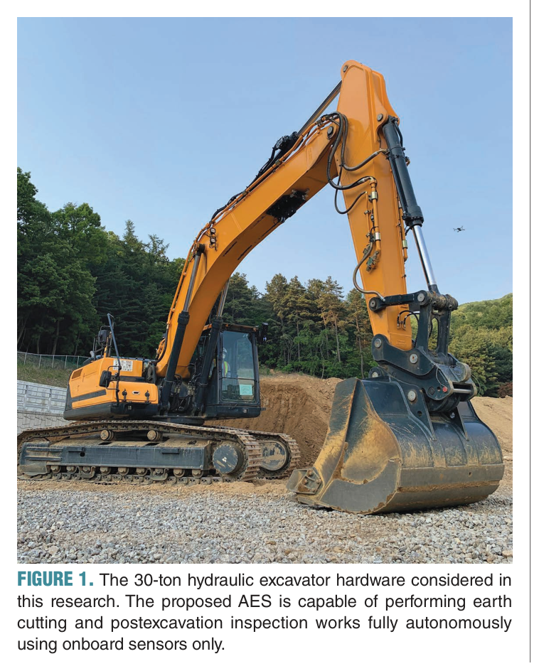
전체 아키텍처
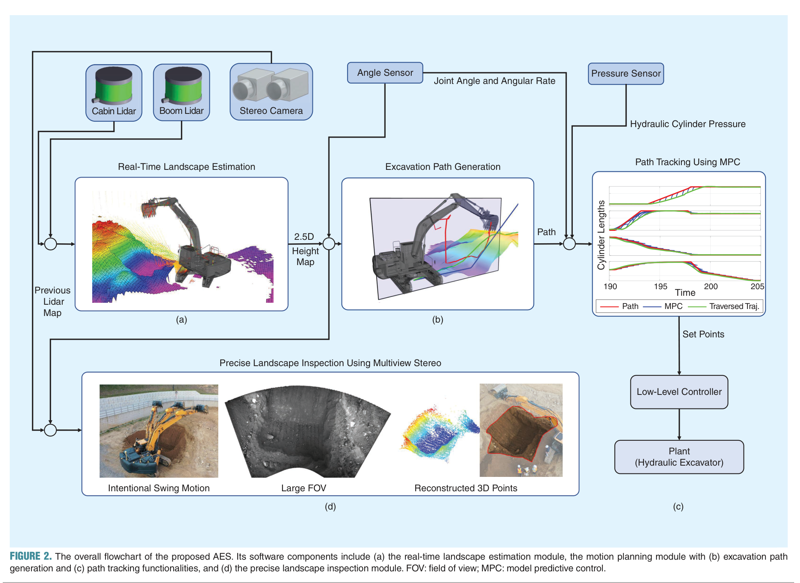
2.1 센서 구성
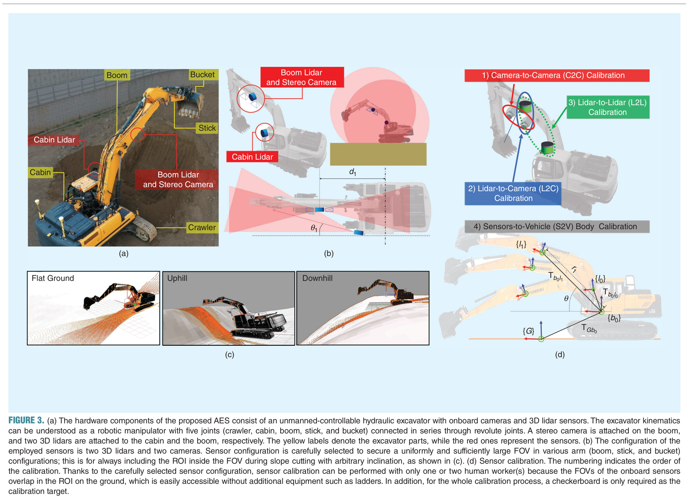
| 센서 | 위치 | 역할 | 정밀도 |
|---|---|---|---|
| 캐빈 라이다 | 캐빈 측면 (기울임) | 원거리 일관 관측, 붐 움직임 무관 | ~3cm |
| 붐 라이다 | 붐 하단 (회전축 평행) | 경사면 밀집 스캔, 붐과 함께 이동 | ~3cm |
| 스테레오 카메라 | 붐 하단 (라이다 옆) | 정밀 검사용 고해상도 이미지 | <1cm (BA 후) |
| IMU | 각 관절 | 팔 자세 측정 | 0.1° |
| 로터리 엔코더 | 스윙축 | 캐빈 회전각 | 2° |
| 압력 센서 | 유압 실린더 내부 | MPC 파워 제약 계산 | — |
핵심 아이디어: 붐 하단에 라이다를 장착하여 붐 회전축과 평행하게 배치 → 붐이 어떤 각도에 있든 경사면을 밀집 스캔 가능. 기존 연구(캐빈 상단만 배치)의 경사면 FOV 한계를 해결. 드론 같은 외부 장비 불필요.
2.2 센서 캘리브레이션 (4단계)
- C2C (Camera-to-Camera): 스테레오 카메라 내부 파라미터 - Zhang 방법 [17]
- L2C (Lidar-to-Camera): 라이다-카메라 외부 파라미터 - 자동 타겟 검출 + 리프로젝션 에러 최소화 [18]
- L2L (Lidar-to-Lidar): 두 라이다 간 외부 파라미터 - 동시 체커보드 관측 [18]
- S2V (Sensors-to-Vehicle): 전체 센서 → 굴착기 좌표계 정렬 - 관절 각도 센서와 결합
- 체커보드 하나만 필요, 1~2명 작업자로 완료 가능
- 모든 센서 FOV가 ROI 근처 지면에서 겹침 → 사다리 등 추가 장비 불필요
03 실시간 지형 추정
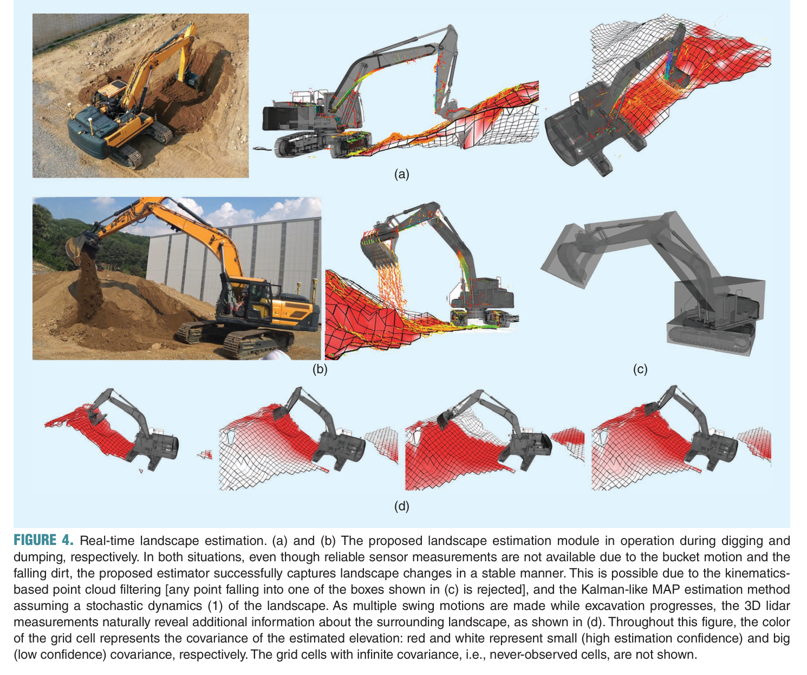
3.1 2.5D 높이맵
작업 영역을 40cm × 40cm 격자로 분할하고, 각 셀 c에 높이의 기대값 x̂c과 분산 σ̂c2을 관리한다. 전체 3D가 아닌 2.5D를 쓰는 이유는, 건설 지형은 각 수평 위치에 높이가 하나이므로 셀당 스칼라 높이면 충분하기 때문이다.
3.2 포인트 클라우드 필터링
굴착 중 버킷, 팔, 떨어지는 흙이 라이다에 잡히는 문제를 기구학 기반 필터링으로 해결한다.
# 포인트 클라우드 필터링 의사코드
for point in lidar_points:
reject = False
for part in [boom, stick, bucket]:
bbox = compute_3D_bbox(part, current_joint_angles)
if point_in_bbox(point, bbox):
reject = True
break
if not reject:
assign_to_cell(point, heightmap)3.3 칼만 필터형 MAP 추정
지형 동역학 모델 (식 1):
지형의 높이가 시간에 따라 변할 수 있다고 가정하는 확률적 동역학 모델:
| 기호 | 의미 |
|---|---|
| xkc | 시각 tk에서 셀 c의 높이 |
| xbucketc | 버킷 팁이 지나간 높이 (굴착 시 지형이 깎임) |
| ukc | 굴착 후 노이즈 ~ 𝒩(0, Qu) |
| wkc | 자연 변화 노이즈 ~ 𝒩(0, Qw) (미세 산사태 등) |
직관: Qu, Qw가 작으면 “지형이 잘 안 변한다”고 가정 → 이전 추정값을 더 신뢰. Qu, Qw가 크면 지형 변화가 잦다고 가정 → 최신 센서 측정값에 더 의존.
측정 모델 (식 2):
| 기호 | 의미 |
|---|---|
| y | 라이다 높이 측정값 |
| xkc | 셀 c의 실제 높이 (추정 대상) |
| v ≥ 0 | 라이다 거리 측정 분산 (센서 스펙에서 제공) |
| C ≥ 0 | 지형 최대 기울기 관련 파라미터 |
| d | 라이다 점에서 셀 중심까지의 수평 거리 |
직관: 셀 중심에서 멀리 떨어진 점일수록 해당 셀의 높이를 대표하기 어렵다 (C · d2 항). 경사면에서는 40cm만 벗어나도 높이가 크게 달라질 수 있기 때문.
MAP 추정 과정:
각 셀에 높이의 기대값과 추정 분산을 함께 관리한다 (초기값: 분산 무한대, 기대값 0). 매 업데이트마다, 이전 시점 tk의 추정값과 tk ~ tk+1 사이에 들어온 라이다 점들을 결합하여 MAP(최대 사후 확률) 추정을 수행한다. 이렇게 구한 MAP 평균 x̂k+1c이 시각 tk+1에서의 지형 정보로 사용되어 충돌 회피 및 굴착 경로 생성에 활용된다.
# 칼만 필터형 MAP 업데이트 의사코드
for cell in heightmap:
# 예측 단계: 동역학 모델 (식 1) 적용
if bucket_swept_cell(cell, t_k, t_k1):
x_pred = bucket_tip_height(cell)
var_pred = Q_u
else:
x_pred = cell.height # 이전 추정값 유지
var_pred = cell.variance + Q_w # 불확실성 증가
# 업데이트 단계: 새 라이다 측정값들로 MAP 추정
for p in filtered_points_in_cell(cell):
d = horizontal_distance(p, cell.center)
R = v + C * d * d # 측정 분산 (식 2)
K = var_pred / (var_pred + R) # 칼만 게인
x_pred = x_pred + K * (p.z - x_pred)
var_pred = (1 - K) * var_pred
cell.height, cell.variance = x_pred, var_pred3.4 성능 & 로버스트니스
- 두 라이다 10Hz 입력 → 높이맵 5Hz 업데이트
- 굴착/덤핑 중에도 안정적으로 지형 변화 추적
- 파라미터(셀 크기, Qu, Qw, C, δt)에 크게 민감하지 않음 → “합리적 범위”이면 OK
04 굴착 모션 생성
4.1 2단계 구조
기하학적 제약(위치 관련)과 물리적 제약(속도/힘 관련)을 분리하여 효율적으로 해결한다.
| 단계 | 목적 | 방법 | 제약 유형 | 시간 |
|---|---|---|---|---|
| 경로 생성 (Path) | 기하학적 제약 만족 | DFS + A* | 충돌 회피, 버킷 자세 등 | ~0.3s |
| 경로 추적 (Trajectory) | 물리적 제약 만족 | MPC | 파워, 유량, 변위 한계 | <0.08s |
4.2 5단계 굴착 사이클
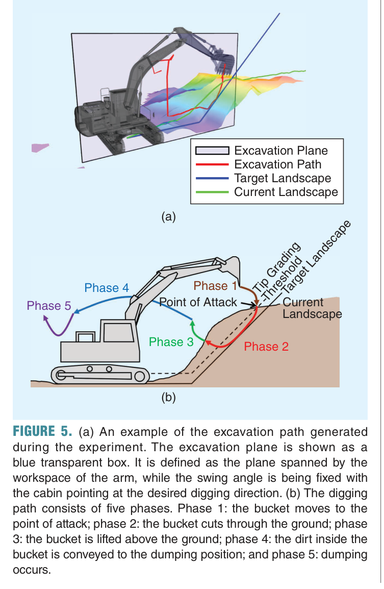
Phase 5 완료 후 Phase 1부터 반복
| Phase | 동작 | 핵심 제약 | 알고리즘 |
|---|---|---|---|
| 1 | 초기 → 공격점 이동 | 충돌 회피 | A* (4D: 스윙+3실린더) |
| 2 | 굴착 수행 | 스윙 고정, 과굴착 방지, 용량 제한 | DFS (3D: 3실린더) |
| 3 | 버킷 들어올리기 | 충돌 회피 | A* (4D) |
| 4 | 덤핑 위치로 이동 | 흙 유출 방지 (버킷 방향 제약) | A* (4D) |
| 5 | 덤핑 | — | A* (4D) |
4.3 두 가지 굴착 프로파일
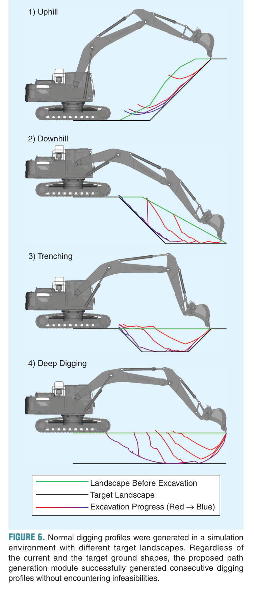
일반 굴착 (Normal Digging)
- 목표: 매 사이클에서 버킷 용량(1m³)에 근접한 최대 부피 굴착
- 방법: 3D 격자(붐/스틱/버킷 실린더 길이)에서 DFS(깊이 우선 탐색)
- 공격점(Point of Attack): 현재 지형과 팁 그레이딩 임계값의 교점 중 캐빈에서 가장 먼 점
- 우선순위 휴리스틱: 예상 굴착 부피↑ + 예상 파워 소비↓ (하드웨어 특화)
- 실행 가능성 체크: 버킷 용량 초과 여부, 절삭각(팁 경로와 버킷 각도), 팔 관통 여부
# DFS 기반 일반 굴착 경로 탐색 의사코드
def find_digging_path(landscape, target):
root = find_point_of_attack(landscape, target) # 가장 먼 교점
stack = [root]
while stack:
node = stack.pop() # DFS: 후입선출
if is_feasible(node): # 용량, 절삭각, 관통 체크
if excavated_volume(node) >= target_volume:
return path_to(node)
children = expand(node) # 실린더 길이 한 스텝 변경
children.sort(key=lambda n: heuristic(n)) # 부피↑ + 파워↓
stack.extend(children)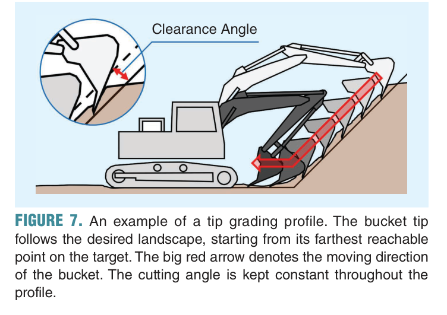
팁 그레이딩 (Tip Grading)
- 목표: 목표 지형을 따라 표면 정밀 다듬기
- 방법: 목표 지형의 가장 먼 도달 가능 점에서 시작 → 일정 절삭각 유지하며 캐빈 방향으로 당김
- 전환 조건: 높이 오차 ≤ 50cm
- 팁 그레이딩 후에도 오차가 크면 재굴착+재그레이딩 반복
4.4 A* 경로 계획 (Phase 1, 3, 4, 5)
- 탐색 공간: 4D 격자 (스윙 각도 + 3 실린더)
- 목적함수: 각 실린더의 유입/유출 유량 합 최소화 → 에너지 효율
- Phase 4 추가 제약: 버킷 개구부가 아래를 향하는 configuration → 장애물 취급 (흙 유출 방지)
05 MPC 기반 경로 추적
5.1 왜 MPC가 필요한가
경로(Path)에는 시간 정보가 없다. “어디를 지나가라”만 있고 “얼마나 빨리”가 없다. MPC는 시간을 배분하면서 동시에 물리적 제약을 실시간으로 만족시킨다.
굴착기 상태가 현재 상태 q₀로 피드백되어 최적화를 반복
5.2 동역학 모델 (식 3)
1차 이산 시간 기구학 모델:
| 변수 | 차원 | 의미 |
|---|---|---|
| q | ℝ4 | configuration: 스윙 각도 + 3개 실린더 길이 |
| u | ℝ4 | 제어 입력: 스윙 속도 + 3개 실린더 신축 속도 |
| fd | — | 이산 시간 상태 전이 함수 |
기구학 관계: q̇ = J(q) · u, 여기서 J(q)는 자코비안 행렬.
설계 선택: 고차 유압 동역학 모델(압력, 관성 포함)은 유온(oil temperature)/마찰 불확실성이 크고 비선형성이 강해 실시간 MPC 적용이 어렵다. 대신 1차 기구학 모델 + 충분한 성능의 저수준 제어기 조합이 실용적이며, 실험으로 유효성을 검증했다.
5.3 물리적 제약 (식 4)
| 기호 | 의미 |
|---|---|
| fp | 유압 실린더 내부 압력 측정값 (파워 제약 계산에 사용) |
| c(·) | 물리적 제약 함수 (3가지 제약을 벡터로 결합) |
논문에서 고려하는 3가지 물리적 제약:
- 파워 한계 (Power limit)
- 실린더 변위 한계 (Cylinder displacement limit)
- 펌프 유량 한계 (Pump flow rate limit)
5.4 MPC 최적화 문제 (식 5)
제약 조건:
| 제약 | 수식 | 의미 |
|---|---|---|
| 동역학 (식 3) | qk+1 = fd(qk, uk) | 물리 법칙 |
| 초기 상태 | q0 = q(t) | 현재 위치 |
| 물리적 제약 (식 4) | c(qk, uk, fp) ≤ 0 | 파워, 유량, 변위 한계 |
비용함수 J는 상태 오차 q − qr과 제어 입력 u에 대한 이차 형식(quadratic)이며, Augmented Lagrangian 방법 기반 제약 iLQR [20]로 실시간 풀이한다.
5.5 시간 배분
- 경로 세그먼트별 이동 시간 = 각 실린더의 기준 신축 속도를 초과하지 않는 최대 시간(느리게 갈수록 안전)
- MPC가 이 기준 시간을 따르되, 물리적 제약에 의해 실시간 조절
06 정밀 지형 검사
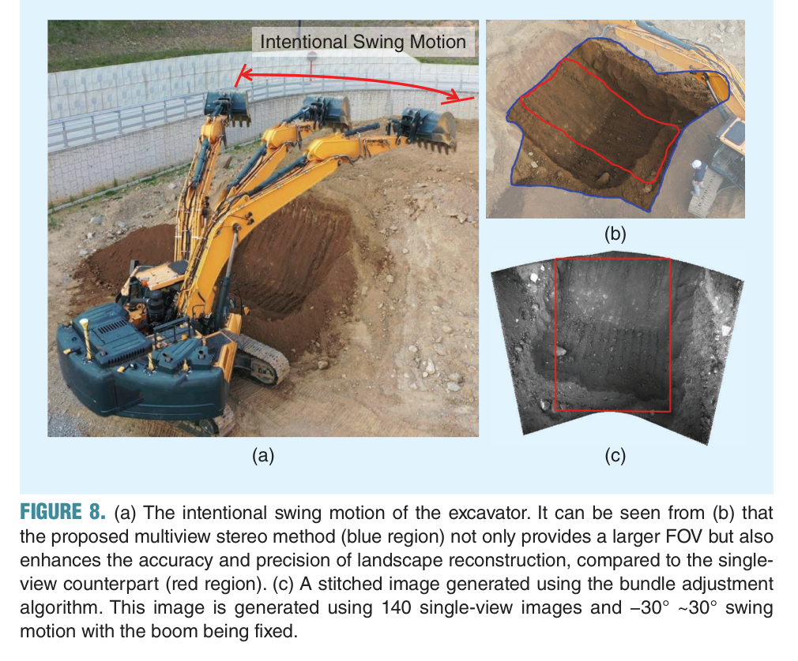
6.1 방법: 멀티뷰 스테레오 + 2-Step Bundle Adjustment
6.2 프로세스
- 촬영: 붐 고정 + 60° 스윙 → 연속 스테레오 이미지 촬영 (~60초)
- 특징점 추적: Constrained Affine KLT — 일반 KLT는 수직 관측을 가정하나, 굴착기 카메라는 비스듬히 보므로 아핀 변환으로 패치 변형을 모델링
- 3D 복원: 2-Step Bundle Adjustment
6.3 2-Step BA (핵심 혁신)
문제: Full BA는 모든 카메라 포즈(6DoF × N장)와 모든 3D 점(3 × M개)을 동시 최적화. M이 수백만이면 포즈-점 커플링 항으로 계산 폭발.
핵심 통찰: 카메라 포즈를 정확히 결정하는 데 수백만 점은 필요 없다. 수천 개면 충분하다.
| Step | 최적화 대상 | 점 개수 | 포즈 | 특징 |
|---|---|---|---|---|
| 1 | 포즈 + 점 동시 | ~수천 (FAST score 상위) | 자유 | 포즈 결정에 충분 |
| 2 | 점만 | 수백만 전체 | 고정 | 커플링 없음 → 빠름 |
정밀도 손실은 Full BA 대비 무시할 수 있는 수준이며, 계산 속도는 수십 배 향상.
6.4 라이다 사전 정보 활용
라이다 높이맵 → 특징점 3D 위치 초기값 제공 → BA 수렴 속도·안정성 향상. 라이다(대략적, 빠름) + 카메라(정밀, 느림)의 센서 퓨전 효과.
6.5 성능 비교
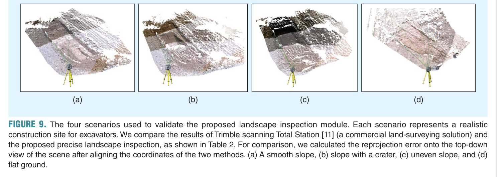
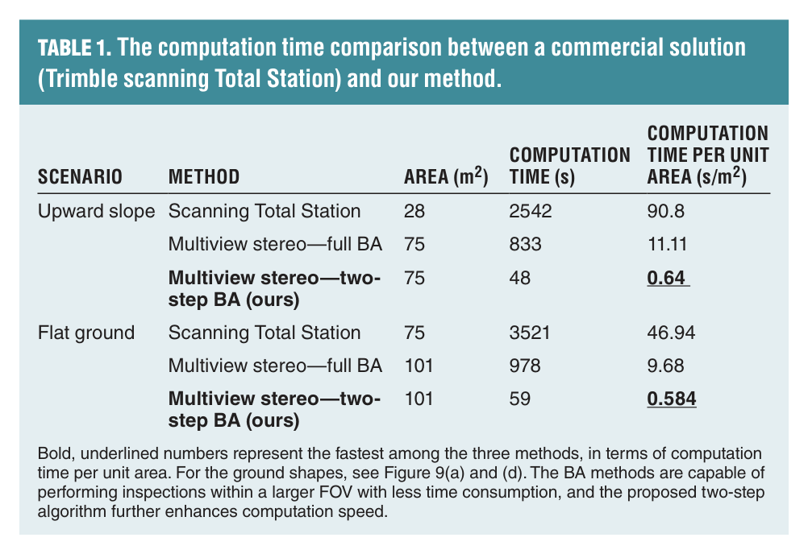
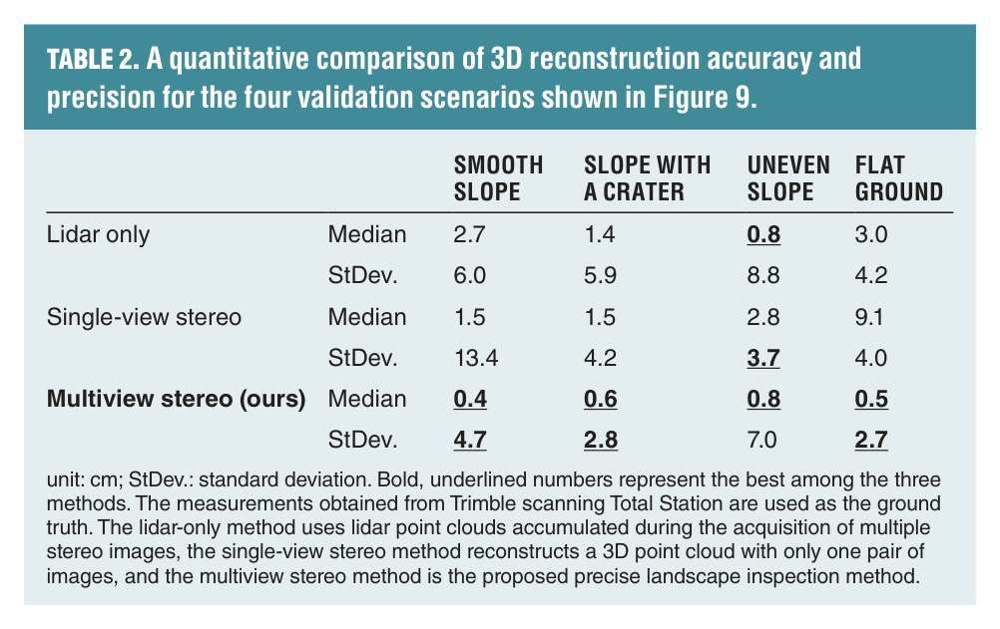
| 방법 | 정밀도 | 시간 (35m²) | 속도 (s/m²) | 비고 |
|---|---|---|---|---|
| Trimble Total Station | ~mm | 1,192초 | 34.2 | 별도 장비+인력 |
| 3D 라이다 단독 | ~3cm | 수 초 | <0.1 | 정밀도 부족 |
| 단일뷰 스테레오 | ~2cm | 수 초 | <0.1 | 시야각 제한 |
| 제안 방법 (2-Step BA) | <1cm | 25.8초 | 0.74 | 온보드 자동 |
→ Trimble 대비 ~46배 빠르면서 유사한 정밀도
07 실험 결과
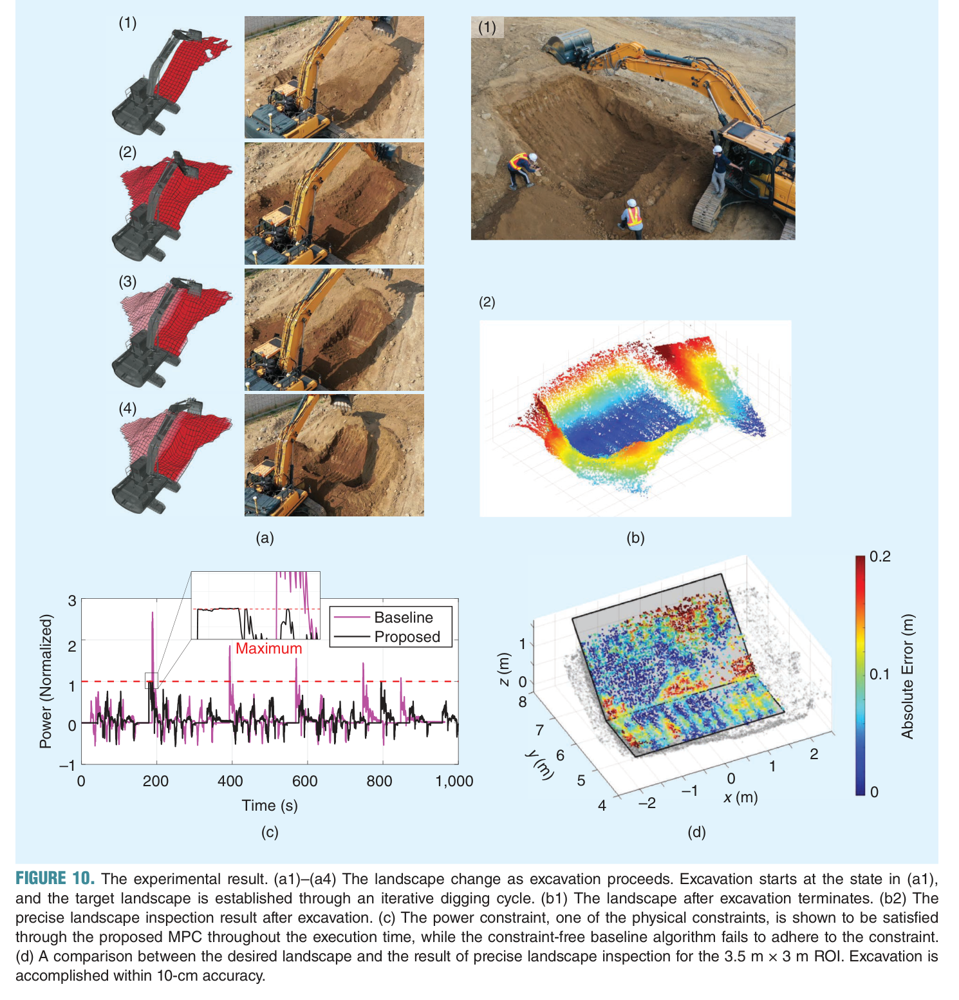
실험 설정
| 항목 | 값 |
|---|---|
| 장비 | Hyundai HX300AL (30톤), 버킷 1m³, 강철 이빨 10cm |
| 작업 | 45° 상향 경사면 절토, 폭 3.5m × 높이 1.5m |
| 방법 | 3개소에서 수평 이동하며 반복 굴착 |
| 제어 주파수 | 100Hz (전자유압 밸브) |
| 온보드 컴퓨터 | 쿼드코어 1.8GHz, 8GB RAM (GPU 없음) |
주요 결과
| 지표 | 결과 | 의미 |
|---|---|---|
| 절토 평균 오차 | 7.4cm (σ = 5.3cm) | 전문 기사 수준 |
| 검사 정밀도 | <1cm | 건설 검수 기준 충족 |
| 검사 소요 시간 | 85.8초 (촬영 60 + 계산 25.8) | Trimble 대비 46배 빠름 |
계산 시간
| 모듈 | 시간 | 비고 |
|---|---|---|
| 지형 추정 | 실시간 (5Hz) | 라이다 10Hz 입력 |
| 경로 생성 | ~0.3초 | 덤핑-복귀 시간 내 완료 → 무중단 굴착 |
| MPC | <0.08초 | 실시간 물리적 제약 대응 |
| 검사 알고리즘 | 25.8초 (0.74 s/m²) | Trimble 대비 46배 빠름 |
MPC 제약 만족
- 제안 MPC: 파워 제약을 항상 만족 → 안정적 굴착, 버킷 팁 흔들림 없음
- 제약 없는 베이스라인: 파워 제약 빈번히 위반 → 장비 위험, 불안정 굴착
08 한계 및 향후 연구
현재 한계
- 카메라 기반 검사 → 야간/악천후 불가
- 미감지 지하 장애물(암반) 대응 미흡
- 단일 굴착기, 단일 작업만 검증
- 크롤러 이동 계획 미포함
향후 연구 방향
한마디로 정리
- 핵심 방법은? — 칼만 필터형 2.5D 높이맵 + DFS/A* 경로 생성 + MPC 물리 제약 추적 + 2-Step BA 검사를 온보드 통합 구현
- 핵심 결과는? — 30톤 실기로 45° 경사면 7.4cm 정밀도 자율 절토, 서브 cm 온보드 검사 달성
- 한계는? — 야간/악천후 미대응, 지하 장애물 미감지, 단일 작업·단일 굴착기만 검증
핵심 키워드
자율 굴착AESMPC번들 조정2.5D 높이맵칼만 필터DFSA*KLT멀티뷰 스테레오유압 굴착기온보드 센서지형 검사
나의 의견
이 논문을 읽고 느낀 점, 우리 연구와의 연관성, 활용 가능성 등을 자유롭게 기록
- 우리도 MAP 기반 2.5D 지형맵 활용해서 구현해보기
- C2C, L2C 등 센서 캘리브레이션도 구현해보기
- 절토 평균 오차가 7.4cm 이면 충분한 정확도는 아닌듯